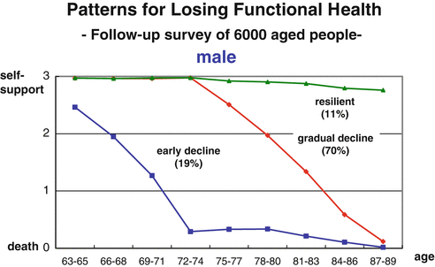
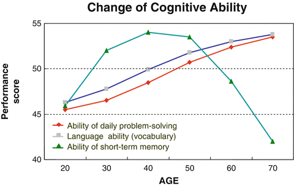

Japan is faced with a society that is aging at a rate that is unprecedented in any country. In 2006, people aged 65 and over represented about 21 % of Japan’s population, while they are expected to account for 30 % in 2025 and 40 % in 2050 (Cabinet Office Japan 2010). The populations of China and India are expected to reach their peaks in the mid-2030s and by the end of 2050, respectively. That is, all countries will face aging societies by 2050.
Japan has never experienced an aging society
in its history. The country has yet to identify all the problems it could face. Any unexpected event is conceivable. In this respect, Japan has just started responding to an aging society from scratch, without knowing what will happen in the future. Taking this opportunity, I would like to present some of the challenging problems related to Japan’s aging society.
Japan—A Country with Challenges and the Power for Manufacturing from Scratch
Japan has a number of difficult problems with respect to its social systems, including the depopulation of local communities, congestion of cities, education, public finances, medical care, pension systems, transport, and distribution. Aging-related problems
are at the root of these issues. In general, aging is considered to adversely affect the economy because it causes a decrease in demand and increases the costs of the medical care and pension systems.
One effect of the aging society
is a sharp increase in social welfare costs paid out from the government’s general expenditures. General expenditures refer to the national government’s general accounts less government debt expenses and transfers to local governments. This budget can be used for implementing government policy. Social welfare costs are incurred in such systems as pension, medical care, and nursing care. In 1965, in the midst of a period of rapid economic growth, the ratio of social welfare costs to general expenditures was 17.7 %. The ratio then increased sharply to 34.9 % in 2000 and to 53.1 % in 2011 (Terasawa 2011). The majority of the budget applied to government policies is used for social welfare. Now, it is impossible to strategically allocate the budget. It goes without saying that the aging issue lies behind surging social welfare costs.
Aging
is an issue faced by all human beings in the twenty-first century, and is closely related to many problems.
At the same time, however, we must remember that aging is a benefit obtained from longer lives. We want to build a society in which we can enjoy longer lives while feeling secure. To achieve such a society, it is essential to develop new industries by creating demand for aging-related products and services and by converting needs into real demand to encourage supply. Here is a great opportunity for Japan to take advantage of its capability of “making things from scratch.” Although Europe is poised for aging societies in the near future, few countries have the manufacturing strength of Japan.
Sweden, Finland, and other advanced countries in northern Europe have a business model based on purchasing raw materials and having manufacturers in Taiwan manufacture products, but they find it difficult to manufacture products themselves. This can be explained by the fact that these countries lack industrial clusters—infrastructure to develop new industries. American venture businesses are likely capable of creating new industries that involve manufacturing from scratch, but they do not acutely feel this need: The United States has yet to face an aging society
thanks to its immigration policy, and so its population is not aware of the need to take action against the global issue of aging.
Japan should take advantage of the current situation as a country that has the manufacturing strength and simultaneously faces the problem of an aging society
.
Five Conditions for Happy Aging
In response to an aging society
, different approaches should be applied to healthy people and those who require nursing care.
First, we must discuss how to enable healthy senior citizens to participate in society. “Senior people” suggests “the weak” or “people requiring nursing care.” However, the fact is that 70–80 % of senior citizens aged 70–80 are healthy. These senior citizens have various abilities.
Based on data collected over 20 years on 6,000 senior citizens, Professor Hiroko Akiyama
of the University of Tokyo’s Institute of Gerontology
has pointed out the following trends among senior citizens.
Senior citizens were interviewed to see how they lose physical and mental independence in their daily lives—inability to take a bath, make a phone call, or do other things without the help of others. The results of an analysis of these interviews clarified the following three trends.
With respect to males, 70 % begin to slowly lose their daily-life independence in their 1970s and completely lose it when they are about 90 years old. On the other hand, 11 % of males stay healthy even at the age of 90. However, nearly 20 % of males lose their independence in their mid-1960s and require long-term nursing care from the age of about 72 until they die (Figs. 5.1 and 5.2) (Akiyama 2010).

Fig. 5.1
Patterns for losing functional health. Source: Akiyama Hiroko (2010)

Fig. 5.2
Change of cognitive ability. Source: Cornelius and Caspi (1987, p. 150)
Conversely, one might say that 70–80 % of people can stay healthy even when they are in their 1980s. Humans can maintain their verbal skills and problem-solving abilities until about 2 years prior to death. Namely, their wisdom, as exemplified by their verbal skills and problem-solving abilities, improves with age. Despite their decreasing physical strength, senior citizens are an important human resource of wisdom for society.
The conditions for “happy aging
” are known scientifically. The physical and scientific mechanisms of aging and health are being elucidated by the life and cognitive sciences. Related research results indicate that people can age in good health if five conditions are met: (1) nutrition, (2) exercise, (3) communication with others, (4) openness to new concepts, and (5) positive thinking. These conditions can be called the “five conditions for happy aging.” “Happiness” is a personal issue. The principal purpose of national policies for an aging society
should be to build a social environment where individuals can satisfy such personal issues.
The majority of senior citizens need only marginal support to participate in society. For instance, people who are hard of hearing need support from hearing aids, while those with weakening knee muscles would want a robot to help them walk. We must consider how to assist healthy senior citizens to participate in society. Such assistance, by satisfying the five conditions for “happy aging
,” is the best solution to the issue of protecting healthy people from becoming unhealthy.
The other pillar of policies for healthy senior citizens is preventive medicine
. The first basic policy for a vigorous aging society
is to improve the five conditions for “happy aging
” and reinforce preventive medicine.
The second basic policy for an aging society
, it need not be said, is to support those who require nursing care. Nursing care is an area where Japan can make the best use of its technologies. Technologies for reducing or eliminating inconveniences caused to recipients of nursing care would not only improve the quality of life (QOL) of such people, but also reduce burdens on caregivers.
Involve Senior Citizens and Working People in School Education
To achieve the participation of senior citizens in society, we must consider two aspects—technology and social system. To supplement decreasing physical strength, people may need advanced technologies and new services. However, healthy senior citizens can achieve participation easily without the help of such technologies or services, simply by changing the social system.
Senior citizens may be able to contribute to education in a broad sense by taking advantage of their wisdom developed as a social resource. They may play a direct part in school education. Today, school teachers are stretched by their duties. Participation in school education by people having sufficient social experience would produce significant synergies in coordination with teachers. This is a useful example of the efficient use of human resources based on the wisdom and experience of senior citizens.
A questionnaire survey was conducted some years ago covering (about 200 each) school teachers, PTA members, and businesspeople, asking whether they favor the idea of working people participating in school classes. Amazingly, almost all respondents agreed to the idea.
Prior to the survey, we expected PTA members and the majority of businesspeople to be supportive of the idea, while school teachers would likely object. The ratios of proponents among each group was in the order we had expected, but over 90 % of school teachers also supported participation.
Before participating in education, working people must be given basic training. The education system under which classes are conducted by working people together with teachers would produce highly beneficial effects on education. Senior citizens participating in such educational venues as working people would not incur significant expenses.
School Education Is Losing Diversity
One current problem facing school education is that the presence of isolated students is tolerated less as society matures. The teaching certificate system is also becoming excessively complex over time. When I was a college student, educational psychology and other pedagogical subjects were available to students whenever they decided to obtain, even belatedly, a teaching certificate. Some prospective applicants did not even take such subjects. At that time, however, necessary credits were sometimes given to students when they took a 1.8-liter bottle of sake (called an isshobin) to the professor in charge to ask for a credit. There was something easygoing about those days.
Today, such a practice as bribery with an isshobin would not be tolerated, of course. Instead, the fact is that students are now obliged to decide whether they want a teaching certificate as early as their high-school days and take the required teacher training program in college. Only those students are qualified to teach. Thus, educational venues are losing diversity of human resources.
Diversity has also been lost in the lives of students. No parents want their children to become delinquents. It is a pity that today we have few people, including parents, who can give advice to would-be delinquents from their own experience by saying that they were once delinquents but they now live like this, or by giving them examples from overseas. To build such an environment, we need people who have diverse experiences. The loss of diversity among school teachers may be a significant factor in current educational problems.
To improve the educational system, it is advisable to send about three sufficiently experienced working people, for instance, to each elementary school or junior high school as instructors to give lessons at least three times a week. Currently, there are a few cases in which well-known TV celebrities or media personalities give lessons at their old schools. Such activities are not part of education in the true sense of the word. The basis of school education lies in giving 45-minute classes for several hours a week, throughout the year.
In the new educational system, once chosen as teachers, experienced working people should be prepared to stand on the lecture platform even for a single class session throughout the year. They would of course take charge of fewer class sessions than regular school teachers. Their annual income might be one to two million yen at most because their work is part of their social contribution. But, the involvement of committed senior citizens in education would contribute significantly to bringing diversity to educational venues, as well as making their lives worth living.
Half jokingly, I often suggest that each school employ three experienced working people. The first teacher would take charge of science classes, which are subject to rapid scientific changes and developments, because many elementary school teachers do not possess good knowledge of science. The participation of engineers and other scientifically experienced working people would contribute much to science education.
The second person should be an English teacher, who should have experience living abroad. Such experience would enable the teacher to convey to students foreign cultures, lifestyles in foreign countries, differences in ways of thinking, and other new knowledge.
The third senior citizen should be a person having a “fierce expression.” In the past, such people were often seen in the general affairs departments of large companies, and were in charge of dealing with sokaiya
1 corporate racketeer groups. These days this type of person can be found among people who handle unreasonable demands from customers. Currently, schools are seriously bothered by “monster parents,” who accuse their school over trifles (Funamizu 2009). Schools need people who are courageous enough to roar at such “monster parents.” To deal with “monster parents,” such people should have good judgment to assert that a parent’s demands are unreasonable or that the school is to blame for such and such reasons. Difficult problems may be brought to the courts. Schools should be encouraged to participate aggressively in the construction of such a society. The presence of these competent human resources would enable school teachers to focus more time on education.
The entry into the educational community of people having various social experiences would produce more educational diversity
, while at the same time widening points of contact between children and society. It would also help school teachers broaden their way of looking at things. Many senior citizens have generous financial resources, including annuities, and thus want to contribute something to society rather than expect monetary rewards. A new educational system should be formulated to give senior citizens opportunities to involve themselves as regular teachers in school education. They would be satisfied to take charge of even only one class session a day.
The participation of healthy senior citizens in society may not be limited to school education. For instance, they might be able to support child-rearing, which is now a serious issue.
Today, the Internet serves as an easy means for senior citizens to find various opportunities to work for private businesses. They should find more opportunities to take advantage of their wisdom by monitoring needs and developments in society, and dealing with them flexibly. Society would benefit from the participation of senior citizens having sufficient wisdom and physical strength as the economy is revitalized and new jobs are created as a result.
As the trend toward the nuclear family has progressed to its limits, Japan is now faced with a growing number of senior citizens living alone. Such people tend to be isolated. They generally stay indoors, lose points of contact with society, and ruin their health. They eventually need nursing care.
When outside their homes, senior citizens have more opportunities to communicate with others and spend money. Many senior citizens can participate in society by changing their working style or by receiving a little support. Such people can satisfy the “five conditions for happy aging
.”
In summary, our discussion so far suggests that the abilities of senior citizens can be most effectively used in school education. It should be emphasized that their participation is indispensable for the reconstruction of Japan’s educational system. Some experts insist that children are more important for the future than senior citizens. Their justification is understandable, but this is not a matter of choice. The two will combine to produce a synergy.
In fact, we realize that the social participation of senior citizens would lead to solving many present problems. For instance, remember the medical care system of Tōno City as discussed in Chap. 2. Tōno City’s system, which is designed to connect sparsely populated regions with physicians via the Internet, is extremely helpful to senior citizens. This system was originally started to solve a shortage of obstetrics and gynecology specialists. Medical care should be given to all people.
If a medical care system is composed of physicians, co-medicals, medical devices, diagnostic chips, emergency helicopters, and patients, in addition to the Internet connecting them, then such a system can serve as one for an aging society
, and at the same time as a medical care system needed for the future.
Agriculture Competing by Safety and Taste
Agriculture
, forestry, and fishery are industries that can make efficient use of the abilities of senior citizens. Currently, a spirited debate is underway in Japan over whether or not the country should sign the Trans-Pacific Partnership (TPP)
free trade agreement. In the near future, Japan will be forced to open and liberalize its markets. Japan should open its markets to its advantage.
The key to Japan’s success after its participation in the TPP lies in how we should enhance the productivity of agriculture. One alternative is to facilitate the entry of private businesses into the market and also to introduce efficient large-scale agricultural systems. Under such new systems, agriculture would be developed on a large scale by a small group of people. This may result in a number of job cuts.
Meanwhile, Japanese farm products are attracting keen attention for their delicate taste and safety. Because they are safe and delicious, they sell at high prices in China and some other countries.
Cherries produced in Yamagata Prefecture, for instance, are so delicious that they look as if they are objects of art compared to the dark purple cherries imported from the United States. The same can be said of strawberries and mandarin oranges. Many visitors to Japan are surprised by the taste of Japanese fruits and buy them as souvenirs. In China, Japanese apples and rice are very popular among wealthy people. That is, by buying farm products, consumers overseas have confidence in their safety and delicacy, as well as their prices. Thus, we have another alternative for producing high value-added, sophisticated farm products under a labor-intensive system.
Either a large-scale system to cut costs and improve profitability or a labor-intensive system to make superior products may apply to industries other than agriculture to enhance productivity measured in value.
For instance, to restore the forestry industry in the Tenryu region, the city of Hamamatsu established the “Hamamatsu City Vision on Forests and Forestry
” to obtain an FSC certificate. FSC certification
is a global scheme for certifying forests in accordance with established criteria with respect to appropriate forest management
. Once a certificate is granted, businesses cutting or processing wood taken from the forest are permitted to attach logos to such products proving that they have been manufactured from wood grown in an appropriately managed forest. FSC certification is a global certification system.
When FSC-certified, forests increase their value. Lumber taken from the forest is tagged and managed throughout the supply chain. It is noteworthy that trees cut down from a forest and left unprocessed carry no collateral value, while standing trees have collateral value as lumber when tagged. Businesses can borrow money from banks against such tagged trees. This is one example of an initiative to reconstruct the forestry business to ensure its productivity.
Senior citizens should be given opportunities to participate in these new agricultural and forestry initiatives. They may work as either regular employees or volunteers. If the work is physically too demanding, they should not be required to work every day or on a full-time basis. They may engage in growing high value-added safe and delicious farm products that require special care and close attention to cultivate. This is another example of an effort to rebuild agriculture and forestry.
Specialists called tree surgeons provide expertise as an occupation concerning the resuscitation of weakening or old trees. Recently, the new occupation of agricultural doctor has been proposed. Wisdom characterizes senior citizens. Using this wisdom would lead to fulfilling the “five conditions for happy aging
.”
In addition, technology is capable of making up for age-related declines in muscle strength. In Japan, many forests are said to be becoming wastelands partly due to a shortage of hands. It is not so difficult for Japan with its technology to develop a tractor capable of climbing mountain slopes and thinning trees and cutting underbrush. In its development phase, however, there is no knowing whether we can actually develop tractors that can perform the required functions, for example, climbing slopes and doing tree-thinning work, or whether they would sell in the market. In this sense, no new industry would emerge unless there are people willing to assume potential risks.
For such tractors to create a business, the new tractor market has to reach critical mass (a stage at which the sale of a product starts to explode). If only one unit of a tractor is sold, it may have to be priced at millions of yen or even one hundred million yen, considering research and development expenses. As R&D expenses are almost fixed, they would be reduced by a factor of one thousand per unit if 1,000 units were sold, to practically zero. Then one unit might sell for 2 million yen, for example. Thus, policies should be established to lower prices through volume efficiency
.
A big issue for advanced countries is who should implement initiatives for developing new industries. Developing countries can simply adopt successful cases from advanced countries, at low risk. In contrast, in order to create new products that do not currently exist on the market, the cost is initially high. For this reason, many small venture companies are forced to withdraw from the market before critical mass is reached. In order to create new industries for an aging society
, we need a special system such as the Platinum Society Network
discussed in the following chapter.
Don’t Be Frightened by the Threat of Globalization
We should not overly fear the threat of globalization
.
As often pointed out in the past, taxi fares do not need international standardization. On the other hand, liquid crystal televisions, LEDs, and other electrical products are subject to global market competition, and need to be designed from a global point of view. In agriculture, products can compete in terms of security, safety, and delicacy. They may also compete in terms of how they protect the natural environment, such as in the case of satoyama.2
In Japan, many consumers prefer farm products that are not only safe and delicious but are also effective for protecting satoyama
, even if they are more highly priced. What does this mean? There is an opinion that globalization
will damage Japan’s agricultural industry as much cheaper farm products would be imported. We should note, however, that Japanese consumers would not choose products based only on price. Features of products other than price can be elements of market competition. Not all products need to be evaluated globally on the basis of price alone.
While many markets are being consolidated globally, some in Japan are still, and should be, managed on the basis of Japanese values. For instance, many consumers value farm products grown in a beautiful landscape such as the satoyama
or a similar natural environment. They evaluate farm products not only by price but by other features as well. We should not care if American agriculture experts do not understand our values.
In discussions over globalization
, we tend to fear only that price competition would prevail in the market, eliminating less competitive businesses. I believe that markets will be divided into two groups in the future—one that is standardized globally and is composed of globally competitive markets and the other which consists of localized markets.
The sustainability of humans would not be maintained if the world becomes uniform with no diversity of nature and culture. The efforts of each country to maintain diversity in nature and culture would enable us to enjoy foreign travel, grow disease-resistant farm products, develop new drugs, and so forth, to assure the sustainability of human beings.
The importance of diversity applies to Japanese society as well as the global community. To be resistant to a broad range of external changes, society would need to be diverse by accepting the participation of a large variety of people ranging from males and females to young and old citizens, to foreigners, and from healthy to physically handicapped people.
An Aging Society Is a Golden Opportunity for Japan to Take Advantage of Its Technical Capabilities
With respect to the issue of supporting people requiring nursing care, we should use our capabilities to “make things from scratch,” in addition to implementing non-structural measures.
A robotic suit is an example of such capabilities. A Japanese venture company linked to Tsukuba University
has developed and launched a robotic suit
. This product is very useful not only for senior citizens losing muscle strength and those under rehabilitation, but also for those providing nursing care. In nursing care, nursing caregivers sometimes injure their backs while taking care of patients on a bed or in a bath. Expectations are high for this new suit as it could replace some tasks done by nursing caregivers.
Currently only Japanese technology is capable of making endoscopes three millimeters in diameter. Japan has already developed a technology for restoring hearing by directly conveying vibration to the inner ear. Techniques to reproduce corneas and teeth are beginning to be used in regenerative medicine. There are strong needs to develop a wheelchair that enables patients to discharge waste without the help of others, as part of an industry we might call “the human dignity industry
.” Developing technologies like this to aid a sensory organ or help bodily mobility is certain to improve the quality of life of senior citizens.
In the near future, a tremendous diversity of new products may appear in industrial segments associated with the aging society
. Japan has accumulated advanced elemental technologies, including soft and strong materials suitable for robotic suits, materials that can endure an unlimited number of movements, sensors for detecting weak electric currents with a high degree of accuracy, and actuators (devices that convert input energy into physical motion).
For instance, robots
need a large number of efficient motors of various shapes. Such motors require sophisticated magnets. Such magnets, called neodymium-boron magnets, have been discovered in Japan. Neodymium-boron magnets need a coating because they are apt to corrode. Japan is probably the only country that is capable of making the magnets, coating them, and producing them in various shapes.
We need system technologies to manufacture advanced actuators by integrating sensors and motors, in addition to raw materials and components. Japan holds an unchallenged position in its capacity to organize and combine elemental technologies.
The planet probe Hayabusa
, which returned to Earth in June 2010 from its journey into space, was the crystallization of the latest technologies. A large number of Japanese people watched Hayabusa on television as it was burning out after undocking its sampling capsule before reentering the atmosphere, and many people were surely impressed by this (Fig. 5.3).
Fig. 5.3
HAYABUSA. Photo by: Japan Aerospace Exploration Agency
Launched in May 2003, the Hayabusa probe was tasked to land on the asteroid Itokawa
three hundred million kilometers away, collect material samples, and return to Earth. Every element of the probe can be said to be the fruit of Japan’s advanced technologies. One typical example is the autonomous navigation mechanism used for Hayabusa to land on Itokawa. The probe assessed its own status before landing because the asteroid was so distant from Earth that communication with Japan was insufficient to take full control of the probe.
To allow Hayabusa to take care of itself, the sensors on it had to accurately measure distances and monitor its status, while the actuator controlled the probe’s movements and attitude. Moreover, this highly complex system was manufactured within a very small budget, compared to the U.S. budget for space development. Japan excels in making sophisticated systems under such limitations.
Japan can succeed in many industrial fields if it takes the approach used in the Hayabusa project. In agriculture, for example, a variety of sensors may be used to collect soil information, make the best mixture of nitrogen, phosphoric acid, and potassium fertilizers to increase productivity, and supply the mixture to farmers. Further, precision farming has recently been started on an experimental basis. Under the new agricultural system, using GPS data, the minimum optimal amounts of fertilizers and water are sprinkled over each section of a field.
Devices and equipment intended for an aging society
must be manufactured with extreme care because many of them are used in direct contact with the human body. They should not cause pain or friction, and they must not be too heavy to use. Japan is probably the only country with a full range of technologies for developing raw materials into finished products.
When we talk about countries where policies on aging are established, we always refer to Sweden and other Nordic countries. It is true that, in Nordic countries, non-structural social systems are in place to solve issues of aging. However, Japan is one step ahead in manufacturing. There has recently been a series of symposia in Japan to discuss aging societies and related problems with participation from European countries such as Sweden, Germany, and Switzerland. Meanwhile, there have been some discussions on starting joint projects. These countries are turning their expectations toward Japan’s manufacturing strength.
Of course, there is much to learn from Nordic countries. They have the courage to reform their societies. For instance, the meal assistance robot “Bestic” produced by Robot Dalen—which is a Swedish robotics initiative enabling commercial success of new ideas and research within robotics and automation—
plays the roles of arms and fingers when taking meals for those having difficulty moving their arms by detecting subtle movements. Sweden is promoting “Bestic” using such means as a poster portraying an elderly couple having a meal in a restaurant using “Bestic”. This scene signifies one ideal picture of an aging society
.
Japan is the most rapidly aging country in the world, and is seeing growing needs for aging-related products. Many of them, which I have repeatedly mentioned in terms of “creative demand
,” are still to appear on the market. For this very reason, Japan should not wait, as it has in the past, for other advanced countries to develop new products to meet such needs. Now that global competition is a matter of course, we are sure to be overtaken by others and miss opportunities if we just keep waiting.
In industrial sectors aiming to develop and offer new products needed by an aging society
, I believe Japan is capable of fostering manufacturing industries that can maintain their technical advantages over an extended period.
References
Akiyama H (2010) Chyouju Jidai no Kagaku to Shyakai no Kousou. Sci J Kagaku 80(1), Iwanami Shoten
Cabinet Office Japan (2010) Annual report on the aging society 2010 (summary). http://www8.cao.go.jp/kourei/english/annualreport/2010/pdf/p2-3.pdf. Accessed 26 May 2013
Cornelius and Caspi (1987) Everyday problem solving in adulthood and old age. Psychology and Aging 2:144–153
Funamizu Y (2009) Hogosya karano claim ni kannsuru Kennkyu, Aomori-Ken Sougou Gakkou Kyouiku center Kennkyu Kiyou 2009.3. http://www.edu-c.pref.aomori.jp/kenkyu/2008/reports_data/d_ky15.pdf. Accessed 26 May 2013
Terasawa Y (2011) Shyakaihoshyou Yosan -Genkai ga mieta zaigen no nenshutsu, Sangiin Kousei Roudou Iinkai Chousa Shitsu-, Rippou to Chousa 2011.2 No 313. http://www.sangiin.go.jp/japanese/annai/chousa/rippou_chousa/backnumber/2011pdf/20110201077.pdf. Accessed 26 May 2013
Footnotes
1
A sokaiya is a racketeer who extorts money from a company by threatening to cause trouble at the general stockholders meeting.
2
Satoyama, referring to the border zones between arable flat land (sato) and mountain foothills (yama) found throughout Japan, also connote a valuable natural landscape and resource that were traditionally managed by local communities.